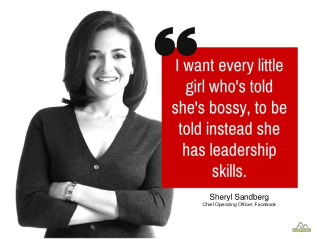
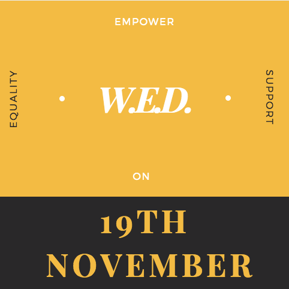

WOMEN’S ENTREPRENEURSHIP DAY
WHAT IS WED?
Women’s Entrepreneurship Day (WED) is a day on which the work of WOMEN ENTREPRENEURS is observed, discussed, and celebrated, held on the nineteenth of November of each year.
The inaugural event in 2014 was held in New York City at the United Nations, with additional events being held simultaneously in several other countries. 144 nations overall recognized the first WED, which included the presentation of the Women’s Entrepreneurship Day Pioneer Awards. The organization behind W.E.D. also has an ambassadorship and fellowship program
WHO TOOK THIS INITIATIVE?

W.E.D. NGO was founded by Wendy Diamond after volunteering with the Adelante Foundation, which provides microcredit to low income women, while in Honduras. Upon her return to the US, she decided she wanted to develop something to help this and similar philanthropic causes. The first WED was held on November 19, 2014, and was observed in 144 countries that year.
SOUNDS LIKE A GOOD THING, WHEN CAN WE CELEBRATE?

WED is scheduled on every 19th of November and can be celebrated by any individual or group of people in any part of the world.
#ChooseWOMEN Pledge
By registering here, you pledge to support WED’s mission of alleviating poverty by empowering, celebrating, and supporting women in business worldwide!
The worldwide movement will create an international network and database of women-owned or led businesses and will feature women and men who have signed up for the #ChooseWOMEN Pledge through our website and social media who help support a business woman in their community with Talent, Time, or Treasure
What is ChooseWomen.org?
It’s a part of W.E.D. that helps impoverished women to receive microloans to help to build their own business on every purchase Leading retailers (the best brands in the world!) have joined #ChooseWOMEN to support, celebrate and empower women in business—and you can, too! Every purchase made will help impoverished women around the world with microloans to become entrepreneurs. There are no extra charges, and no hidden fees. You shop, she thrives!
W.E.D. and JECRC MUN Society

We believe that’s it wrong of Women to think they are equal to Men rather they are far better
Our MUN society has pledged to empower women as per the best of our capabilities and do our part in making this world UNITED BY HALF
End of they day, it’s not about how much money you make, it’s about asking yourself, “Did I achieve something that’ll be remembered and cherished, even after I’m gone?” And if it’s a yes, you have done something worth
Written and edited by
Chaitanaya Sethi
Director General
JECRC MUN 2017